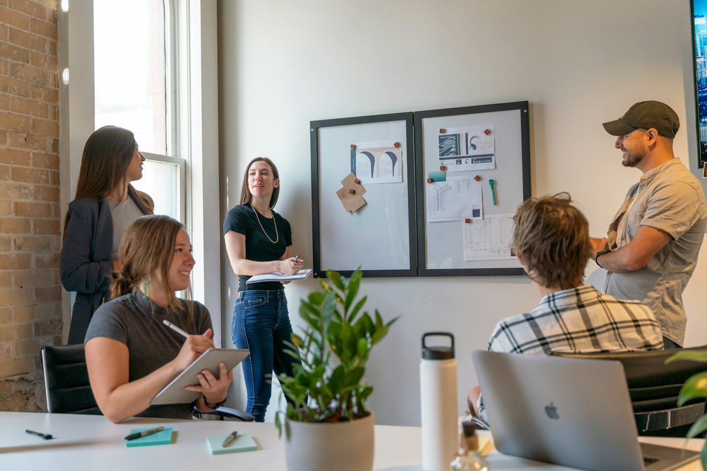

Defined decision
The organization can explain the question and how it expects to use the work.

Quill · Work With Us
Quill is a student-operated, pro bono advisory practice. A potential engagement begins with a focused question and an exploratory conversation.
Project fit
Quill considers whether a project can create educational value and useful analysis within the time, staffing, information, ethical, and confidentiality constraints of a student team.
The organization can explain the question and how it expects to use the work.
The team can obtain the information reasonably required by the agreed scope.
A designated contact can answer questions, review progress, and provide timely feedback.
How the process works
Discuss the organization, question, decision, and anticipated timing.
Review feasibility, staffing, information needs, confidentiality, conflicts, and mutual fit.
Gather agreed inputs, test interpretations, and review progress with the client.
Share findings, limitations, and recommendations for the organization to consider.
The working relationship
Quill provides accepted work at no charge. It is not a licensed professional-services firm, and the organization remains responsible for its decisions and implementation.
An inquiry begins a conversation; it does not guarantee acceptance or staffing.